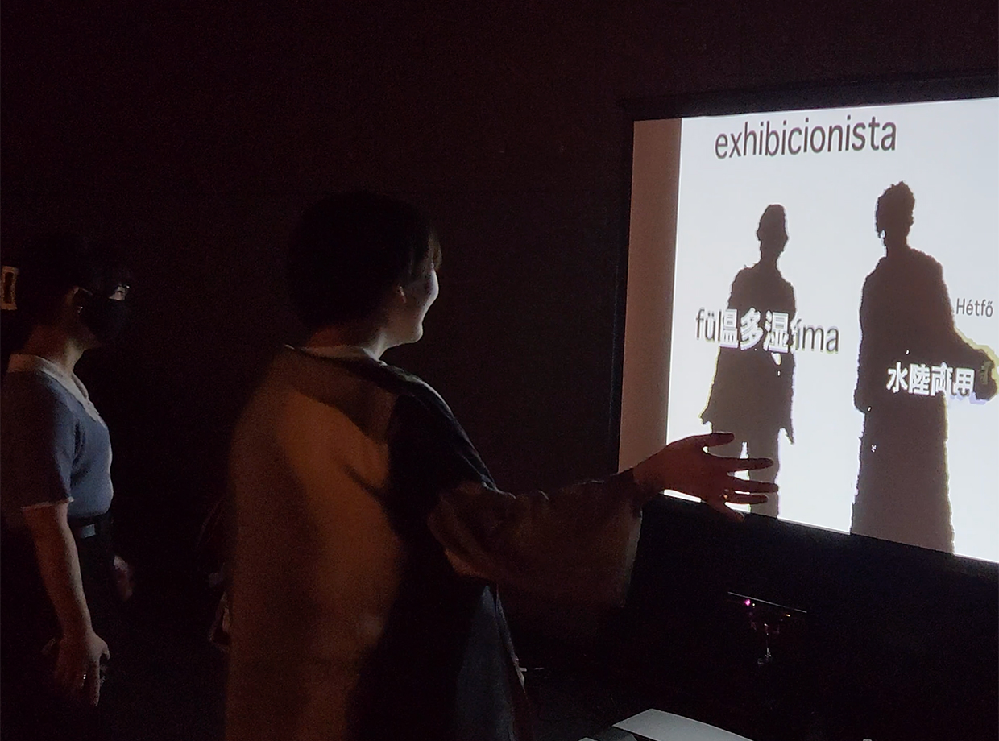
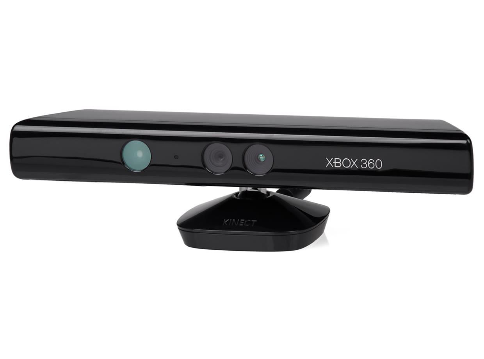

PILOT展
使用技術：Processing、Kinect、Projection mapping
3年生の前期に情報学部のPILOT展という学内展示に参加しました。この授業ではハンガリーに関するアプリ開発を行いました。

来場者が体験している様子

Kinectという深度センサーを使用した
作品概要
タイトル「Translate Rain」
この作品は、プロジェクションマッピングの作品で、体の動きをセンシングし、それを映像に反映しています。スクリーンの前に立つと体のシルエットが浮かび上がり、上から流れてくるハンガリー語に当たると当たっている部分が日本語化されます。
制作意図
私たちが日本人という前提で、他の言語を見つめるときに自分というレンズを通して見ているということを表現しようとしました。上から降ってくるハンガリー語が自分のシルエットに触れると、自分というレンズを通して日本語になるようにしました
また体を動かして体験するので、作品を楽しんでもらうことも目標としました。
工夫した点
- 触れた時にハンガリー語の発音をつけた
- シルエットに当たった瞬間、文字を大きくし、当たったことをわからせ、触れた時の楽しさを演出した
- ハンガリー語から日本語に変わる時、単語が全て変わるのではなく、触れているところだけが変わる
- 降ってくる語は、ハンガリー語の辞書からランダムに選んだこと
- 上から降ってくるまだ触れていない単語は点滅させることで、触りたくさせた
- 体のシルエットに単語が当たると、徐々に減速するようにし、可読性や感覚的に触れていることをわかってもらえるようにした